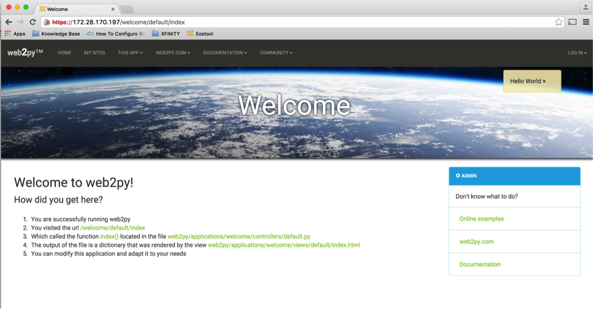

Chapter 6: Web2Py Installation¶
Web2py is an open source full stack framework. You can download web2py from http://web2py.com/init/default/download. You can install it on Windows, Apple Mac or any of the Linux distributions. Installation instruction is documented here http://web2py.com/books/default/chapter/29/13/deployment-recipes. In this chapter, we will show you how to install web2py in Ubuntu. Below is the quick installation steps to install and setup web2py on Ubuntu running Apache as the web server.
Install Required Packages¶
About My Linux¶
anees@ubuntu-web2py:~$ uname -a
Linux ubuntu-web2py 3.16.0-30-generic #40~14.04.1-Ubuntu SMP Thu Jan 15 17:43:14 UTC 2015 x86_64 x86_64 x86_64 GNU/Linux
anees@ubuntu-web2py:~$ python --version
Python 2.7.6
anees@ubuntu-web2py:/$ ifconfig
eth0 Link encap:Ethernet HWaddr 00:0c:29:98:c8:32
inet addr:172.28.170.197 Bcast:172.28.171.255 Mask:255.255.254.0
inet6 addr: fe80::20c:29ff:fe98:c832/64 Scope:Link
UP BROADCAST RUNNING MULTICAST MTU:1500 Metric:1
RX packets:97480 errors:0 dropped:0 overruns:0 frame:0
TX packets:58948 errors:0 dropped:0 overruns:0 carrier:0
collisions:0 txqueuelen:1000
RX bytes:111218578 (111.2 MB) TX bytes:10125393 (10.1 MB)
Install Required Packages for Python Development¶
anees@ubuntu-anees-1:~$ sudo apt-get install build-essential python-dev libsqlite3-dev libreadline6-dev libgdbm-dev zlib1g-dev libbz2-dev sqlite3 zip libssl-dev
Install Python modules¶
anees@ubuntu-web2py:~$ sudo apt-get install python-pip
anees@ubuntu-web2py:~$ sudo pip install pyeapi
anees@ubuntu-web2py:~$ sudo pip install jsonrpc
Install Apache¶
anees@ubuntu-web2py:~$ sudo apt-get install apache2
anees@ubuntu-web2py:~$ sudo apt-get install libapache2-mod-wsgi
anees@ubuntu-web2py:~$ sudo a2enmod wsgi
anees@ubuntu-web2py:~$ sudo a2enmod ssl
anees@ubuntu-web2py:~$ sudo a2enmod proxy
anees@ubuntu-web2py:~$ sudo a2enmod proxy_http
anees@ubuntu-web2py:~$ sudo a2enmod headers
anees@ubuntu-web2py:~$ sudo a2enmod expires
anees@ubuntu-web2py:~$ sudo a2enmod rewrite
Create SSL Certificate¶
anees@ubuntu-web2py:~$ sudo mkdir /etc/apache2/ssl
anees@ubuntu-web2py:~$ sudo sh -c 'openssl genrsa 1024 > /etc/apache2/ssl/self_signed.key'
anees@ubuntu-web2py:~$ sudo chmod 400 /etc/apache2/ssl/self_signed.key
anees@ubuntu-web2py:~$ sudo sh -c 'openssl req -new -x509 -nodes -sha1 -days 365 -key /etc/apache2/ssl/self_signed.key > /etc/apache2/ssl/self_signed.cert'
You are about to be asked to enter information that will be incorporated
into your certificate request.
What you are about to enter is what is called a Distinguished Name or a DN.
There are quite a few fields but you can leave some blank
For some fields there will be a default value,
If you enter '.', the field will be left blank.
-----
Country Name (2 letter code) [AU]:US
State or Province Name (full name) [Some-State]:CA
Locality Name (eg, city) []:San Jose
Organization Name (eg, company) [Internet Widgits Pty Ltd]:Arista
Organizational Unit Name (eg, section) []:Services
Common Name (e.g. server FQDN or YOUR name) []:ubuntu-web2py.mylab.com
Email Address []:admin@mylab.com
anees@ubuntu-web2py:~$ sudo sh -c 'sudo openssl x509 -noout -fingerprint -text < /etc/apache2/ssl/self_signed.cert > /etc/apache2/ssl/self_signed.info'
Install Web2Py¶
anees@ubuntu-web2py:~$ cd /home
anees@ubuntu-web2py:/home$
anees@ubuntu-web2py:/home$ sudo mkdir www-data
anees@ubuntu-web2py:/home$ cd www-data/
anees@ubuntu-web2py:/home/www-data$ sudo wget http://web2py.com/examples/static/web2py_src.zip
anees@ubuntu-web2py:/home/www-data$ sudo unzip web2py_src.zip
anees@ubuntu-web2py:/home/www-data$ sudo mv web2py/handlers/wsgihandler.py web2py/wsgihandler.py
anees@ubuntu-web2py:/home/www-data$ sudo chown -R www-data:www-data web2py
Configure Apache to use mod_wsgi¶
anees@ubuntu-anees-1:~$ cd /etc/apache2/sites-available
anees@ubuntu-anees-1:/etc/apache2/sites-available$ sudo vi web2py.conf
WSGIDaemonProcess web2py user=www-data group=www-data processes=1 threads=1
<VirtualHost *:80>
RewriteEngine On
RewriteCond %{HTTPS} !=on
RewriteRule ^/?(.*) https://%{SERVER_NAME}/$1 [R,L]
CustomLog /var/log/apache2/access.log common
ErrorLog /var/log/apache2/error.log
</VirtualHost>
<VirtualHost *:443>
SSLEngine on
SSLCertificateFile /etc/apache2/ssl/self_signed.cert
SSLCertificateKeyFile /etc/apache2/ssl/self_signed.key
WSGIProcessGroup web2py
WSGIScriptAlias / /home/www-data/web2py/wsgihandler.py
WSGIPassAuthorization On
<Directory /home/www-data/web2py>
AllowOverride None
Require all denied
<Files wsgihandler.py>
Require all granted
</Files>
</Directory>
AliasMatch ^/([^/]+)/static/(?:_[\d]+.[\d]+.[\d]+/)?(.*) \
/home/www-data/web2py/applications/$1/static/$2
<Directory /home/www-data/web2py/applications/*/static/>
Options -Indexes
ExpiresActive On
ExpiresDefault "access plus 1 hour"
Require all granted
</Directory>
CustomLog /var/log/apache2/ssl-access.log common
ErrorLog /var/log/apache2/error.log
</VirtualHost>
:wq!
anees@ubuntu-web2py:/etc/apache2/sites-available$ cd ..
anees@ubuntu-web2py:/etc/apache2$ cd sites-enabled/
anees@ubuntu-web2py:/etc/apache2/sites-enabled$ sudo rm *.*
anees@ubuntu-web2py:/etc/apache2/sites-enabled$ sudo a2ensite web2py
anees@ubuntu-anees-1:/etc/apache2/sites-available$ sudo service apache2 restart
Start Web2Py Service¶
anees@ubuntu-anees-1:/etc/apache2/sites-available$ cd /home/www-data/web2py
anees@ubuntu-anees-1:/home/www-data/web2py $
sudo -u www-data python -c "from gluon.widget import console; console();"
anees@ubuntu-anees-1:/home/www-data/web2py $
sudo -u www-data python -c "from gluon.main import save_password; save_password(raw_input('admin password: '),443)"
***** You will be prompted to setup the web2py admin password ****
admin password:
Verify Web2Py Portal¶
Verify the web2py portal by launching from your browser. In our example, we will launch web2py portal using the url https://172.28.170.197.
